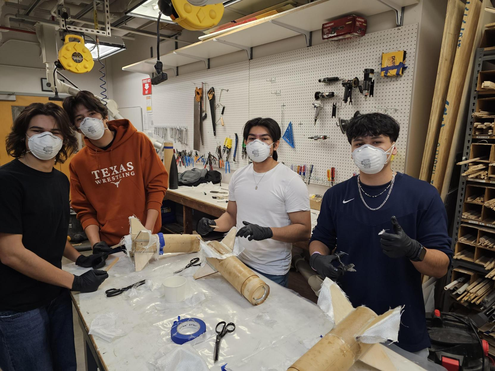
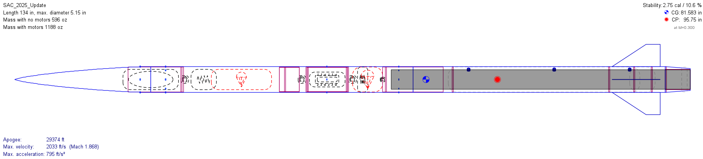

ROCKET HARDWARE
Flight Systems Hardware
High-powered rocket manufacturing, OpenRocket stability analysis, test launch preparation, and Spaceport America Cup operations with Longhorn Rocketry.
Overview
As a member of Longhorn Rocketry's Flight Systems Hardware team, I supported the manufacturing, assembly, integration, analysis, and launch preparation of high-powered rockets. This role gave me hands-on experience with the practical side of aerospace hardware, from building subscale rockets to supporting competition launch operations.
The biggest value of this experience was seeing how much work happens between a design being complete and a rocket being ready to fly. Hardware preparation, fit checks, recovery readiness, stability analysis, launch procedures, and team coordination all had to come together before the vehicle could safely launch.
Role Context
I worked on the hardware side of Longhorn Rocketry, supporting fabrication and integration while also using OpenRocket to evaluate vehicle configuration, stability margin, center of pressure behavior, and expected flight performance.
Building Hardware Experience
A lot of my early work came from building and preparing subscale rockets. That included sanding, cutting, drilling, fitting, bonding, fin attachment, and airframe preparation. These tasks helped me understand how manufacturing quality affects the final rocket, especially when it comes to alignment, surface preparation, tolerances, and bonding.
This was not the flashiest part of the team, but it was one of the most important learning experiences. It gave me a better feel for how rocket hardware is actually assembled and why small build details can matter later during launch and recovery.

Subscale rocket manufacturing work used to build hands-on experience with sanding, bonding, fin attachment, and airframe preparation.
Stability & Performance Analysis
I also used OpenRocket to evaluate vehicle stability and expected flight behavior. This helped connect the physical hardware to the flight characteristics we cared about, including center of gravity, center of pressure, stability margin, predicted apogee, maximum velocity, and acceleration.
This analysis made the hardware work feel more connected to the actual flight. A rocket does not just need to be built cleanly. It also needs to have enough stability margin and a reasonable performance prediction before it goes to the pad.

OpenRocket model used to evaluate the competition vehicle configuration, CG/CP locations, stability margin, predicted apogee, and max flight conditions.
Test Launch Preparation
I supported launch preparation for larger rocket systems, including test launch operations for Longhorn Rocketry's competition vehicle. Seeing the rocket staged on the rail made the connection between shop work and flight operations much more real.
Test launch campaigns showed me how much launch readiness depends on careful preparation. The vehicle has to be assembled, checked, transported, staged, and cleared through procedures before the actual flight can happen.

Competition rocket staged on the launch rail during a test launch campaign.
Test launch of Longhorn Rocketry’s competition vehicle, showing the transition from hardware preparation to flight operations.
Spaceport America Cup Operations
I was selected as one of 17 members to attend Spaceport America Cup with Longhorn Rocketry. Being part of that environment helped me understand how different competition launch operations feel from normal shop work or classroom projects.
At competition, the work becomes about readiness and discipline. Hardware checks, launch procedures, documentation, pad operations, recovery planning, and subsystem confidence all matter at the same time. That experience gave me a much better appreciation for integration work and launch operations.

Longhorn Rocketry competition vehicle during Spaceport America Cup launch operations.
What I Worked On
- Supported fabrication, assembly, and preparation of high-powered rocket hardware.
- Participated in sanding, cutting, drilling, fitting, bonding, fin attachment, and airframe preparation.
- Assisted with airframe assembly, subsystem integration, and hardware fit checks.
- Supported recovery system preparation and readiness checks.
- Used OpenRocket to evaluate vehicle stability, center of pressure behavior, and expected flight characteristics.
- Supported test launch preparation and Spaceport America Cup launch operations.
Technical Highlights
- Worked directly with high-powered rocket hardware through manufacturing, assembly, and launch preparation.
- Built experience with composite structures, fin attachment, mechanical assembly, and recovery system preparation.
- Connected OpenRocket stability analysis to real vehicle hardware and launch readiness.
- Gained hands-on exposure to test launch procedures and competition launch operations.
- Developed a better understanding of tolerances, alignment, checklists, subsystem readiness, and launch discipline.
Tools Used
OpenRocket, composite fabrication, mechanical assembly, recovery systems, airframe integration, hand tools, fit checks, launch preparation, flight hardware integration
Engineering Takeaways
This experience helped me understand that flight hardware is unforgiving. A rocket can look good in a model, but the real system still has to be built, checked, integrated, transported, staged, and launched correctly.
The biggest takeaway was learning how much aerospace engineering happens in the details. Fit, alignment, stability margin, recovery preparation, and launch procedures all matter. This experience gave me a stronger appreciation for the hardware side of rocketry and made later projects in air brakes and active control feel much more grounded.